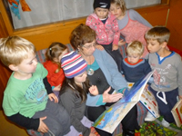
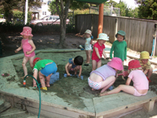

 
About Us
Our aim is to make our centre a place where:
- Children feel happy, secure and confident in their environment.
- Parents and staff work in partnership. Consultation with families is an ongoing process.
- Children are respected as individuals and their efforts and ideas are valued.
- Children are able to work at their own pace and level of development.
- Children experience a multi-cultural perspective.
- The environment is hands on where the children can explore and experiment.
We have a centre cook who provides a cooked meal with dessert for lunch. We have the healthy heart award and all the meals follow the guidelines set down by the Heart Foundation. All the food is fresh. Each child brings one piece of fruit per day which is shared at morning and afternoon tea. The children all eat together and the younger children have many opportunities to mix with the older children.
We are a community based centre run by a parent management committee. We are not for profit, so any profit is directed back into the centre.
We are a mixed age centre, but we do have a separate indoor and outdoor area for children under two. Our roll is a maximum of 30 children, we are licenced for 8 under two. Our teaching team is made up of six fully registered and experienced teachers and two long-serving untrained but very experienced teachers. There is very little staff turnover.
Our building is purpose-built with great bathroom facilities and two separate sleep rooms.
Enrolment
To go on the enrolment waiting list, please print the attach form, sign and return to Marlborough Street Childcare Centre (either scan and email, or send via post).
To view Marlborough Street Childcare Centre, please call the office on 04 527 7243 to arrange a time.
Download the Waiting List Form (PDF, 121kb)
Testimonials
Contact Us
Marlborough Street Childcare Centre
Hours:
7.30am to 5.30pm Monday to Friday
Closed on Public Holidays, Two teacher-only days and Christmas break (2 weeks)
Physical Address:
11 Marlborough Street
Silverstream
Upper Hutt
Mailing Address:
PO Box 48085
Silverstream
Upper Hutt 5142
Phone: 04 527 7243
Email: mcentre@xtra.co.nz